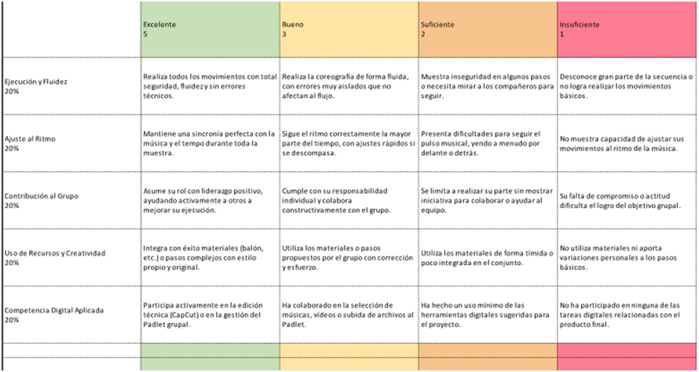

Texto
NOS MOVEMOS CON LA MÚSICA. GUÍA DIDÁCTICA.
Esta situación de aprendizaje está dirigida a alumnado de 1º de ESO de Educación Física. Con ella buscamos una práctica inclusiva que permita disfrutar a todos y todas del movimiento y la creatividad.
1.Título descriptivo: "Nos movemos con la música".
2. Centro de interés o temática: El cuerpo, el movimiento y la música.
3. Nivel al que va dirigido: 1º de ESO.
4. Temporalización aproximada: 6 sesiones.
5. Materia o materias implicadas: Educación Física.
6. Descripción general de lo que se pretende que el alumnado aprenda o trabaje.
A través de la expresión corporal, crear, adaptar o copiar coreografías con o sin materiales uniendo música y coordinación grupal (grupos de 4 o 5 personal, con cierta flexibilidad) para poder comunicar una idea, un sentimiento o emociones. Siempre respetando las propuestas de todos y todas como punto de partida de nuestro trabajo grupal.
7. Justificación de la elección sobre la base de la rutina de pensamiento elaborada en la tarea 1.1.
1. El proyecto:
1. Descripción
He diseñado una SdA titulada "Nos movemos con la música" de 6 sesiones para 1º de ESO. El núcleo es la expresión corporal, integrando el cuerpo, el ritmo y el movimiento.
2. Sentimientos
Una parte del alumnado es reacio a participar en este tipo de actividades, la mayor parte de estos por timidez. Esto ocurre cuando piensan "el baile no es lo mío" les preocupa el qué dirán los compañeros/as.
3. Evaluación
· Lo positivo: El alumnado elige los agrupamientos y el nivel de dificultad (en un mismo grupo no necesariamente todos/as tienen que hacer los mismos pasos y elementos),
· El reto: Conseguir que nadie se autoexcluya y crear un clima favorable a la actividad.
4. Análisis
Integrar música y movimiento de esta forma permite conectar al alumno con su identidad (sus gustos, intereses y forma de relacionarse con los demás) y mejorando también la coordinación grupal y su confianza personal.
5. Conclusión
Utilizamos Metodologías Activas (Aprendizaje Cooperativo) que contribuyen a una mayor interacción del alumnado en busca de una meta común, contribuyendo a una coevaluación continua. Quizá sea esta la mejor herramienta para que el alumnado sea capaz de resolver el reto que se propone.
2. Justificación normativa de las Tareas :
Tarea 1. Visionado de vídeos de YouTube alojados en Padlet.
Criterio 1.6: Identificar diferentes recursos y aplicaciones digitales reconociendo su potencial, así como sus riesgos para su uso en el ámbito de la actividad física y el deporte.
Tarea 2. Búsqueda de otras coreografías o músicas (que les puedan servir) en Youtube.
Criterio 1.6: Identificar diferentes recursos y aplicaciones digitales reconociendo su potencial, así como sus riesgos para su uso en el ámbito de la actividad física y el deporte.
Tarea 3. Organización/creación de los grupos por parte de los propios alumnos/as.
Criterio 3.2: Colaborar en la práctica de diferentes producciones motrices, especialmente a través de juegos, para alcanzar el logro individual y grupal, participando en la toma de decisiones respecto a los objetivos y la estrategia.
Tarea 4. Intercambio de propuestas entre los componentes de cada grupo con muestra de vídeos seleccionados y primeros ensayos.
Criterio 2.1: Participar en el proceso de creación de proyectos motores de carácter individual, cooperativo o colaborativo, estableciendo mecanismos para reconducir los procesos de trabajo cuando sea necesario.
Tarea 5. Prueba práctica de las distintas propuestas para descarte o elección directa.
Criterio 2.1: Participar en el proceso de creación de proyectos motores de carácter individual, cooperativo o colaborativo, estableciendo mecanismos para reconducir los procesos de trabajo cuando sea necesario.
Tarea 6. Práctica de la coreografía elegida por partes, intercalada con ensayos completos. Grabación de ensayos.
Criterio 4.3: Utilizar intencionadamente y con progresiva autonomía el cuerpo como herramienta de expresión y comunicación a través de diversas técnicas expresivas, participando en la interpretación de secuencias de movimiento individuales o colectivas con intención artística o expresiva.
Tarea 7. Práctica y grabación de la coreografía completa.
Criterio 4.3: Utilizar intencionadamente y con progresiva autonomía el cuerpo como herramienta de expresión y comunicación a través de diversas técnicas expresivas, participando en la interpretación de secuencias de movimiento individuales o colectivas con intención artística o expresiva.
Tarea 8. Selección de las grabaciones (ensayos y coreografía completa), edición y subida a Padlet para compartirlas.
Criterio 1.6: Identificar diferentes recursos y aplicaciones digitales reconociendo su potencial, así como sus riesgos para su uso en el ámbito de la actividad física y el deporte.
Tarea 9. Muestra al grupo de clase de la grabación de las coreografías completas. Visionado de las coreografías completas.
Criterio 3.2: Colaborar en la práctica de diferentes producciones motrices, especialmente a través de juegos, para alcanzar el logro individual y grupal, participando en la toma de decisiones respecto a los objetivos y la estrategia.
3. Asociación entre tareas y criterios de evaluación :
|
TAREA |
CRITERIO DE EVALUACIÓN |
|
Visionado de vídeos de YouTube alojados en Padlet. |
Criterio 1.6: Identificar diferentes recursos y aplicaciones digitales reconociendo su potencial, así como sus riesgos para su uso en el ámbito de la actividad física y el deporte. |
|
Búsqueda de otras coreografías o músicas (que les puedan servir) en Youtube. |
Criterio 1.6: Identificar diferentes recursos y aplicaciones digitales reconociendo su potencial, así como sus riesgos para su uso en el ámbito de la actividad física y el deporte. |
|
Organización/creación de los grupos por parte de los propios alumnos/as. |
Criterio 3.2: Colaborar en la práctica de diferentes producciones motrices, especialmente a través de juegos, para alcanzar el logro individual y grupal, participando en la toma de decisiones respecto a los objetivos y la estrategia. |
|
Intercambio de propuestas entre los componentes de cada grupo con muestra de vídeos seleccionados y primeros ensayos. |
Criterio 2.1: Participar en el proceso de creación de proyectos motores de carácter individual, cooperativo o colaborativo, estableciendo mecanismos para reconducir los procesos de trabajo cuando sea necesario. |
|
Prueba práctica de las distintas propuestas para descarte o elección directa. |
Criterio 2.1: Participar en el proceso de creación de proyectos motores de carácter individual, cooperativo o colaborativo, estableciendo mecanismos para reconducir los procesos de trabajo cuando sea necesario. |
|
Práctica de la coreografía elegida por partes, intercalada con ensayos completos. Grabación de ensayos. |
Criterio 4.3: Utilizar intencionadamente y con progresiva autonomía el cuerpo como herramienta de expresión y comunicación a través de diversas técnicas expresivas, participando en la interpretación de secuencias de movimiento individuales o colectivas con intención artística o expresiva. |
|
Práctica y grabación de la coreografía completa. |
Criterio 4.3: Utilizar intencionadamente y con progresiva autonomía el cuerpo como herramienta de expresión y comunicación a través de diversas técnicas expresivas, participando en la interpretación de secuencias de movimiento individuales o colectivas con intención artística o expresiva. |
|
Selección de las grabaciones (ensayos y coreografía completa), edición y subida a Padlet para compartirlas |
Criterio 1.6: Identificar diferentes recursos y aplicaciones digitales reconociendo su potencial, así como sus riesgos para su uso en el ámbito de la actividad física y el deporte. |
|
Muestra al grupo de clase de la grabación de las coreografías completas. Visionado de las coreografías completas. |
Criterio 3.2: Colaborar en la práctica de diferentes producciones motrices, especialmente a través de juegos, para alcanzar el logro individual y grupal, participando en la toma de decisiones respecto a los objetivos y la estrategia. |
4. Herramientas de evaluación.
* Diana de Autoevaluación / Coevaluación del Grupo
- La diana (creada con Canva) quedará alojada en el Classroom del alumnado.
https://view.genially.com/69fc516d63141095bf09189e
https://classroom.google.com/c/ODYzMjM1ODgwMTQ1/a/ODYzMzgzMTY4OTA0L2d0L0hqVlJaVzA9/details
Instrucciones: Cada alumno/a debe desplazar la estrella correspondiente ( del 1 al 4) en cada área. El nivel 1, alrededor del centro de la diana (muy bajo) y el nivel 4 es el borde exterior (excelente).
Áreas de la Diana (Indicadores):
1. Ritmo y Coordinación: ¿Hemos conseguido movernos a la vez y seguir el tempo de la música?
2. Creatividad y Materiales: ¿Hemos aportado pasos originales o usado materiales (balones, cintas, etc.) de forma creativa?
3. Uso de la Tecnología: ¿Hemos consultado el Padlet, buscado en YouTube o usado CapCut para mejorar la coreografía?
4. Trabajo en Equipo :¿Nos hemos escuchado, repartido roles y ayudado cuando alguien se perdía?
5. Actitud y Superación: ¿Hemos vencido la timidez y nos hemos esforzado por mejorar en cada ensayo?
Descripción de los Niveles para el Alumnado
Para que los alumnos sepan qué puntuación ponerse en cada eje, puedes facilitarles esta pequeña guía:
Nivel
Descripción Visual
Significado
1. Muy bajo
Cerca del centro
No hemos trabajado en este aspecto o ha habido muchos conflictos.
2. Bajo
Primer anillo
Hemos trabajado poco, pero nos disponemos a mejorar.
3. Medio
Segundo anillo
Hemos cumplido bastante bien, aunque podría haber más esfuerzo.
4. Alto
Borde exterior
Hemos trabajado muy bien y estamos muy satisfechos del resultado.
Momentos de Aplicación:
- En la sesión tercera: la Diana servirá al alumnado para "ver" en qué flojean y reaccionar a tiempo antes de la grabación final.
-Tras la grabación final, para comparar y comprobar si las medidas adoptadas por el grupo has sido las adecuadas. Esta última la subimos al Padlet.
*Lo que voy a evaluar con la Rúbrica:
· La ejecución motriz: No se busca "baile profesional", sino la capacidad de coordinar el cuerpo con un ritmo externo y con el resto del grupo.
· La superación del rechazo inicial: Se valora positivamente la integración de materiales deportivos (como el bote de balón) para aquellos alumnos más tímidos.
· La alfabetización digital: El uso de herramientas (YouTube para inspirarse, CapCut para editar y Padlet para publicar) como medio para comunicar su trabajo.
· Colaboración La evidencia visual de que han colaborado para alcanzar un logro común (la coreografía terminada).
Esta rúbrica la utilizaré durante el visionado de los vídeos en la Sesión 6, permitiendo dar un conocimiento de resultados inmediato.
La rúbrica estará alojada en Classroom desde la primera sesión para que pueda ser consultada, sirva de orientación al alumnado y para resolver todas las dudas que puedan surgir desde el primer momento.
https://classroom.google.com/c/ODYzMjM1ODgwMTQ1/a/ODYzMjY2Nzc4Njg3/details

5. Créditos
© 2026. [Rafael Ruiz/IES Las Viñas].
Esta Situación de Aprendizaje "Nos movemos con la música" se publica bajo la licencia CC BY-SA 4.0. Eres libre de compartir y adaptar este material siempre que reconozcas la autoría y compartas bajo la misma licencia.